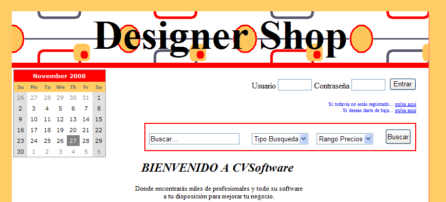
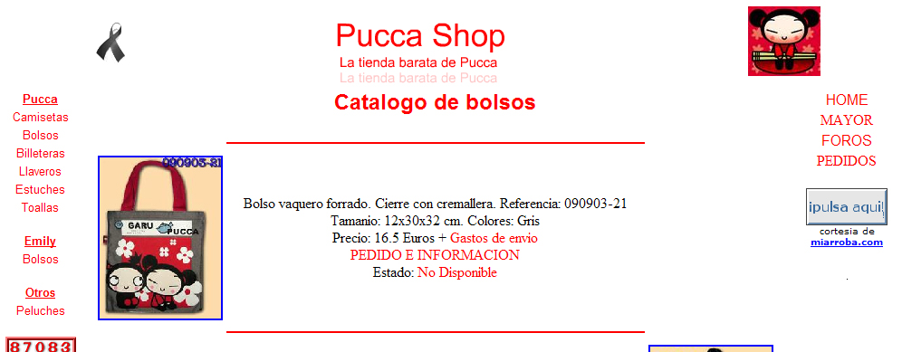

Visor Web Epaper
Techniques: Flex 4.6, e4x, XML, Actionscript 3.0, FlexBook, CubeRotation, Effects
Web application developed in Flex to display online newspapers. It is configurable by customers both in appearance and language. The application was developed as part of my job to Protecmedia S.A.
Because this application belongs to Protecmedia, and the client versions are accessible only by subscription, I recorded a video where you see the functionality of it, in this case parameterized for Orbyt.
Currently some free versions are available:
Link to Customer Epaper El Colombiano
Link to Customer Epaper La Prensa Grafica - Free registration
A world of books
Techniques: XHTML 1.1, CSS, Usability, Accessibility, crossbrowser
Static website. Designed as a project for the subject of Web Interface Design Master of Multimedia at the Pontifical University of Salamanca Madrid campus.
The main design philosophy has been to create a page with the highest grade usability and accessibility. This is designed considering the standards XHTML1.1, CSS, and controlling its level of accessibility is WAI-AAA.
Taking also important to use two languages ??and multiple platforms from which you can access the web (Firefox, Internet Explorer 7, PDA).
All these design decisions are duly detailed in the memory available on that site.

Designer Shop
Techniques: XHTML 1.1, CSS, ASP.Net, J2EE, JSP, Javascript
Dynamic Website with public and private parts. Existing two different user profiles with their own menus.
The main design philosophy has been to create a page in ASP.Net but contemplating standards XHTML1.1, CSS.
We made ??an identical J2EE web using JSP and javascript.

PuccaShop
Techniques: PHP, mySQL
Dynamic Website developed with PHP and mySQL. It was created as online Shop of RaquelShop.
It is a very simple example of dynamic web and does not fit my current knowledge of dynamic web design, as these have increased over the years, now working primarily with JSP and ASP.NET.
